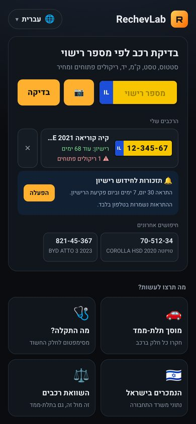
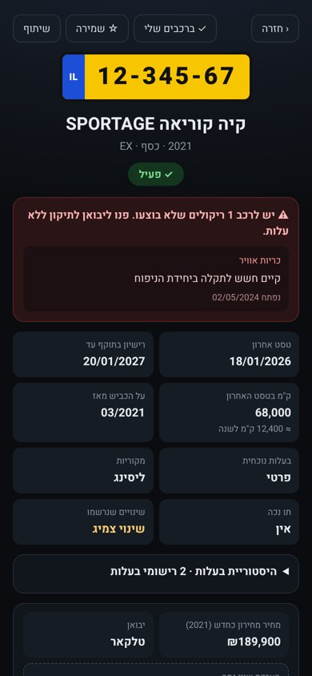
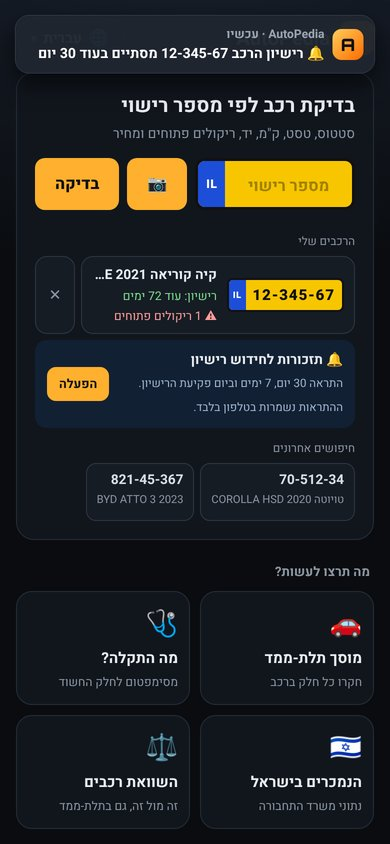
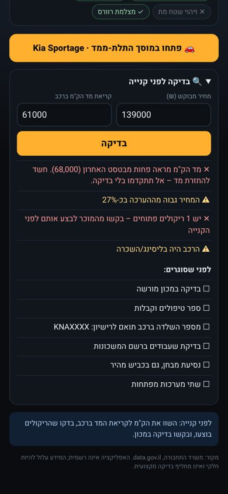
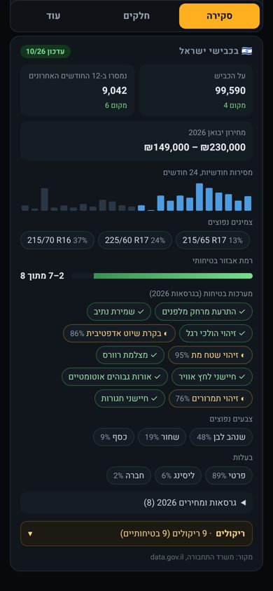
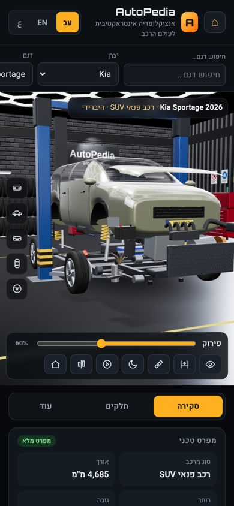
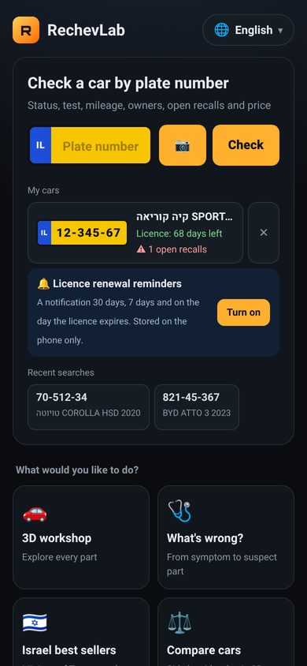
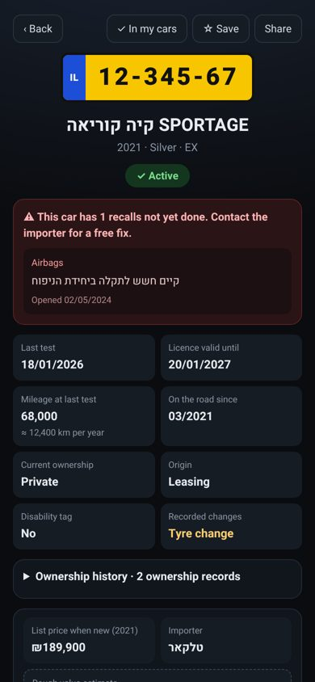
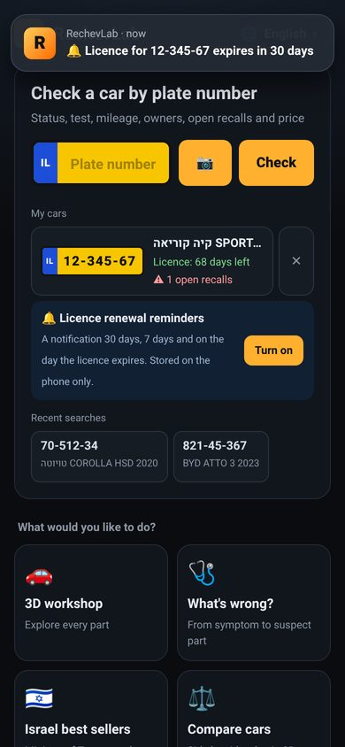

בדיקת רכב לפי מספר רישוי, ריקולים, מחירון, תזכורות לחידוש רישיון, נתוני הדגמים בישראל ומוסך תלת-ממד שמסביר כל חלק. בעברית, בערבית ובאנגלית.






בהקלדה או בסריקה במצלמה: סטטוס, טסט ותוקף רישיון, ק"מ, היסטוריית בעלות, שינויים, ריקולים פתוחים ומחיר מחירון כחדש.
זיהוי חשד להחזרת מד ק"מ, השוואת המחיר המבוקש להערכה, ורשימת בדיקות לפני שסוגרים עסקה.
תזכורות לחידוש רישיון והתראה על ריקול חדש. הכל נשמר בטלפון בלבד.
כמה רכבים על הכביש, מכירות, צמיגים נפוצים, רמת בטיחות וכל הריקולים, לפי נתוני משרד התחבורה.
פירוק הרכב לחלקים והסבר לכל חלק, עם סימפטומים ותדירות טיפול. אפשר גם לטעון מודל תלת-ממד משלכם (GLB) – הקובץ נשאר בטלפון.
בוחרים סימפטום ורואים על הרכב את החלקים החשודים.
ללא הרשמה, ללא פרסומות וללא איסוף מידע אישי. המידע מגיע ממאגרי המידע הפתוחים של משרד התחבורה (data.gov.il). האפליקציה אינה רשמית ואינה מחליפה בדיקה מקצועית. צילומי המסך מציגים נתוני הדגמה. שמות היצרנים והדגמים הם סימני מסחר של בעליהם ומשמשים לזיהוי בלבד; AutoPedia אינה קשורה ליצרניות או ליבואנים.
Licence-plate lookup, recalls, list prices, licence-renewal reminders, Israeli model data and a 3D workshop that explains every part. In Hebrew, Arabic and English.



Typed or scanned with the camera: status, test and licence validity, mileage, ownership history, recorded changes, open recalls and list price when new.
Flags a possible odometer rollback, compares the asking price with the estimate, and gives a checklist before you close the deal.
Licence-renewal reminders and new-recall alerts. Everything stays on your phone.
Cars on the road, sales, common tyre sizes, safety level and every recall, from Ministry of Transport data.
Take the car apart, with every part explained, its failure symptoms and service interval. You can also load your own 3D model (GLB) – the file stays on your phone.
Pick a symptom and see the suspect parts on the car.
No sign-up, no ads, no personal data collected. Data comes from the Israeli Ministry of Transport open data (data.gov.il). Not an official app; it does not replace a professional inspection. Screenshots show demo data. Manufacturer and model names are trademarks of their owners, used for identification only; AutoPedia is not affiliated with any manufacturer or importer.